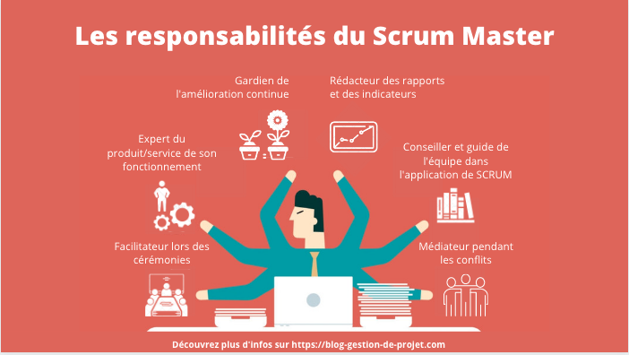

Skip to content
4W4
Un site utilisant WordPress
1
2
3
1
2
3
Cours
Valeurs Scrum
Courage
Engagement
Focus
Ouverture
Respect
Session 1
582-1J1 Animation et interactivité en jeu (75h)
582-1M1 Création vidéo (75h)
582-1M2 Conception graphique et imagerie matricielle (90h)
582-1W1 Mise en page Web (75h)
Session 2
582-2J2 Création de jeu 2D (60h)
582-2M3 Effets spéciaux et animation (60h)
582-2M4 Conception graphique et imagerie vectorielle (90h)
582-2W2 Animation et interactivité Web (75h)
Session 3
582-3C1 Design d’interactivité (75h)
582-3J3 Création de jeu 3D (75h)
582-3M5 Imagerie 3D (75h)
582-3W3 Création de sites Web dynamiques (90h)
Session 4
582-4C2 Gestion de projets multimédias (45h)
582-4J4 Création de jeu en équipe (105h)
582-4PA Interfaces Web réactives et animées – Cours au choix (75h)
582-4MB Animation 3D (75h)
582-4W4 Conception d’interfaces et développement Web (90h)
Session 5
582-5JA Expérimentation en jeu – volet programmation (90h)
582-5JB Expérimentation en jeu – volet création (90h)
582-5MB Technologies émergentes et avancées – volet Création (60h)
582-5PA Technologies émergentes et avancées – volet Programmation (60h)
Session 6
582-6N2 Projet de fin d’études (120h)
582-6N3 Stage (285h)
Scrum
Courage
Concentration
Respect
Ouverture
Implication
